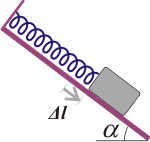
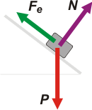
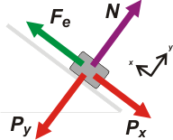
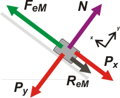
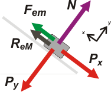

NO ME SALEN
PROBLEMAS RESUELTOS DE FÍSICA DEL CBC
(rozamiento y elásticas)
|
|

|
| |
|
FIS d5.11 - Ídem problema anterior, pero ahora el resorte está sujeto a la parte
superior del plano inclinado. Comparar los resultados.
Un bloque de masa m se coloca sobre un plano inclinado unido
a un resorte de largo natural lo y constante elástica k. El plano
inclinado forma un ángulo α con la horizontal.
Datos: lo = 60 cm, k = 500 N/m, m = 30 kg y α = 37º.
a) Suponiendo que el plano está perfectamente pulido, calcular la
posición de equilibrio del bloque con respecto al extremo fijo del
resorte.
|
 |
b) Si los coeficientes de rozamiento estático y dinámico entre el
bloque y el plano fueran μe = 0,4; μd = 0,15, respectivamente, hallar la
máxima longitud que podrá darse al resorte sin romper el equilibrio.
c) Con los mismos coeficientes anteriores, hallar la mínima longitud del resorte que conserve el
equilibrio. |
|
|
El principal cambio es que ahora se trata de estiramientos en lugar de compresiones. Por lo demás, es todo igual. |
|
|
|  |
Acá tenés la situación inicial, bastante sencilla, hay tres fuerzas actuando sobre la caja. La fuerza elástica, Fe, que es paralela al plano inclinado. La fuerza de apoyo, N, que es perpendidcular (o normal, para que te quedes contento) al plano, y la fuerza peso, P, que es vertical. Voy a descomponer a la última en dos direcciones: una dirección normal y otra perpendicular al plano.
Acordate que ahora estamos sin rozamiento. |
|
|
|
| Ahí te coloqué el SR, para que no te pierdas. |
|
|
|  |
Sigue siendo la situación inicial, en que no hay fuerza de rozamiento y la caja está en equilibrio. Fijate (y controlá) que
Px = P sen α
Py = P cos α
y acordate que Fe = k Δxi |
|
|
|
Como ΣFx = 0 y ΣFy = 0, ya que el cuerpo esta en equilibrio no cabe otra que
P sen α = k Δxi
N = P cos α (esta no aporta nada interesante por ahora)
Δxi = P sen α / k
Δxi = 300 N . 0,6 / 500 N/m
Δxi = 0,36 m
No te olvides de que esta deformación es estiramiento, el cuerpo está extendiendo al resorte.
Li = L0 + Δxi
Li = 0,60 m + 0,36 m
|
|
|
|
|
|
Vamos a la segunda pregunta, nos piden hallar la máxima longitud que
podrá darse al resorte sin romper el equilibrio. Habendo rozamiento no es que el resorte se vaya a estirar solo... tenés que tomar el cuerpo con la mano, correrlo hacia abajo y suavemente, deslizarlo hacia abajo hasta que se queda en equilibrio. Vas a notar que la compresión del resorte es diferente a la anterior, menor... el motivo es que está actuando la fuerza de rozamiento.
Si imaginás una máxima longitud imaginarás un resorte que se estira másde lo que estaba antes... o sea la fuerza elástica debe ser mayor en este caso que en el anterior. No puede ser que Px haya disminuido, pues P es constante, la unica posibilidad (bastante inducida por el resto de la información) es que aparece una fuerza de rozamiento que "traba" antes de que rebote y vuelva a subir. |
|
|
|  |
Nuevamente ΣFx = 0 y ΣFy = 0, ya que el cuerpo sigue en equilibrio y ahora FeM = k . ΔxM. Por otro lado el rozamiento debe ser estático... pero además debe ser el estático máximo, para corresponderse con la mínima compresión del resorte (un milímetro más y se rompe el equilibrio). Y no te olvides que
ReM = μe . N
Bueno, con toda esta elucubración, reescribamos las ecuaciones de x e y |
|
|
|
Fem = P sen α + ReM → k ΔxM = P sen α − μe . N
N = P cos α (ahora sí aporta, pues la reemplazo arriba)
k ΔxM = P sen α + μe . P . cos α
ΔxM = (P sen α + μe . P . cos α) / k
ΔxM = (300 N . 0,6 + 0,4 . 300 N . 0,8) / 500 N/m
ΔxM = 0,552 m
LMáx= L0 + ΔxM
LMáx= 0,60 m + 0,552 m
|
|
|
| |
LMáx = 1,152 m |
respuesta b) |
|
|
|
| Y ahora abordemos la última pregunta, que pide hallar
la mínima longitud del resorte que conserve
el equilibrio. Pide lo mismo que antes pero al revés... mínima longitud... mínima fuerza... equilibrio. Y vos ya sabés lo que pasa. |
|
|
|  |
La fuerza de rozamiento ayuda al resorte a sostener el cuerpo.
Seamos serios. De nuevo ΣFx = 0 y
ΣFy = 0, ya que el cuerpo sigue en equilibrio y ahora Fem = k Δxm.
Y el rozamiento nuevamente debe ser
ReM = μe . N, si no, ese no sería el estiramiento mínimo. |
|
|
|
Fem + ReM = P sen α → k Δxm = P sen α + μe . N
N = P cos α (igual que antes)
k Δxm = P sen α − μe . P cos α
Δxm = (P sen α − μe . P . cos α) / k
Δxm = (300 N . 0,6 − 0,4 . 300 N . 0,8) / 500 N/m
Δxm = 0,168 m
Lmín = L0 + Δxm
Lmín= 0,60 m − 0,168 m
|
|
|
| |
Lmín= 0,768 m |
respuesta c) |
|
|
|
| |
|
|
DESAFIO: ¿Cóm son los estiramientos y compresiones respecto al ejercicio anterior? |
|
 |
| Algunos derechos reservados.
Se permite tu reproducción pero ahí no me cites. Última actualización set-06. Buenos Aires, Argentina, América Latina, Planeta Tierra, Sistema Solar, Galaxia Via Láctea, Universo. |
|
|
|